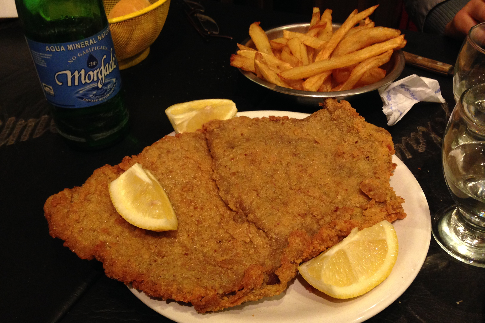

Recipe of Milanesa

Description:
The milanesa is a thin fillet, usually beef, dipped in beaten egg and then in breadcrumbs, which is cooked fried or baked and is usually accompanied by a side dish, such as French fries.
Ingredients
- 4 Eggs
- 2 Garlic cloves
- Parsley
- Saly and Pepper
- Bread crumbs
- 1 Kg meat
Steps
- Pelar los ajos y picar junto con el perejil.
- Colocar los huevos en un bowl y batir hasta disolverlos bien. Luego agregar el perejil, los ajos y condimentar con sal y pimienta.
- Colocar la carne en la mezcla anterior, deje unos minutos, retirar y pasar por pan rallado.
- En una sartén con abundante aceite caliente freír las milanesas. Retirar y escurrir en papel absorbente.